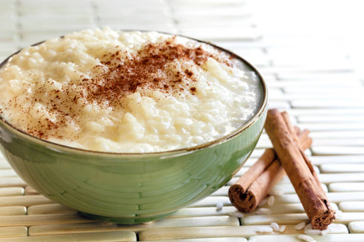

Old Fashioned Rice Pudding

Ingredients
- cups whole milk, divided
- 1/2 cup sugar
- 1/2 teaspoon salt
- 1/2 cup long grain white rice, I use a heaping half cup
- 2 teaspoons vanilla extract
- *cinnamon, optional
Instructions
- In a large saucepan, combine 5 1/2 cups milk, sugar, and salt. Bring to a boil over medium-high heat.
- Stir in rice and reduce heat to low. Be sure to adjust the heat so that it is at a gentle simmer.
- Stirring occasionally, cook for 50 to 60 minutes. Mixture should thicken up to consistency of yogurt.
- Once thickened, remove from heat and stir in vanilla.
- Let cool and then refrigerate. The last 1/2 cup milk is stirred in just before serving. Sprinkle with cinnamon if desired.